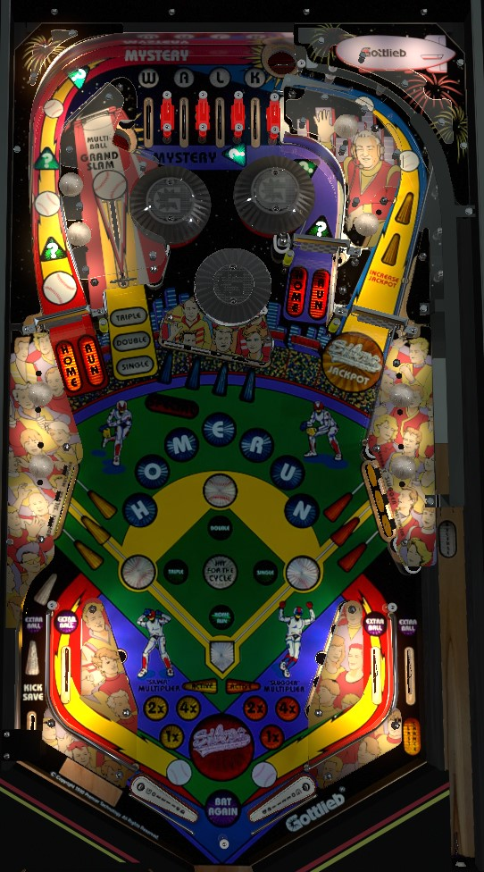

Complete the center drop targets in order by hitting the flashing targets to lights them; this earns letters in Homerun. If Homerun is spelled, each completion of the center drops in order scores 700,000 points times the yellow multiplier, which is raised up to 7x by completing the lower left standups. If the center drops are too dangerous to complete repeatedly, shoot the left and center spinners, landing in the saucers behind them, to score Home Runs (all the time) and Mystery awards (only when the ? inserts are flashing; if they are not, complete the top lanes to qualify them).
The four large white unlabeled inserts in the center of the table represent first base (right), second base (top), third base (left), and home plate (bottom). If the insert is lit, a runner is on that base. Anything that scores a Single or Walk advances all runners 1 base, then puts a runner on 1st base. A double advances all runners 2 bases and puts a runner on 2nd base, while a triple advances all runners 3 bases and puts a runner on 3rd base. If a runner advances past 3rd base, they reach Home Plate, where they score 1 Run. Runs for each player are shown in red numbers at the top of the backglass and contribute to end of ball bonus. Anything that awards a Home Run clears all bases and instantly scores 1 Run for each base that was lit, plus an additional 1 Run, for a maximum of 4 Runs if first, second, and third base were all lit.
At the start of each ball or immediately after a ball is locked, one of the top lanes will be flashing. Plunge into this top lane to score the skill shot, which does not score increased points but does "load the bases", lighting all 3 base inserts to indicate there are now runners there, as well as awarding a Homerun letter. If a top lane is flashing for the skill shot, flipper lane change cannot be used.
In normal play, roll through a lit top lane to unlight it. The right flipper controls lane change, which rotates which lane(s) are lit. Unlight all 4 lanes to score a Walk- which is the same as a Single, moving all runners forward 1 base and then putting a runner on 1st base- as well as relight the saucers for Mystery awards if they were not already lit.
There are no one-way gates at the top of the playfield, so there's no guarantee the ball will ever go through a top lane on a trip to the top of the playfield. This combined with lane change being disabled means the skill shot is a quite difficult precise power plunge. In live play, the easiest way to guarantee at least one top lane is to shoot the top saucer via the left orbit; this saucer weakly flops the ball down-left, and it should always make one of the top lanes.
Flashing drop targets score 50,000 points; unlit or solidly lit drop targets score 5,000 points.
Completing the drop targets in ANY order awards between 1 and 3 letters in Homerun, depending on game settings. If all letters in Homerun were already lit, completing the drop target bank scores the Home Run Bonus, which is equal to 100,000 points per lit Homerun letter times the yellow bonus multiplier. The yellow bonus multiplier is advanced by hitting all three yellow standup targets in the lower left to convert them from flashing to solidly lit. This means the effective score of completing the center drops when Homerun is lit is 700,000 points times the number of completions of the yellow targets on that ball; the yellow bonus multiplier maxes at 7x, so this one drop target bank could be worth as much as 4,900,000 points. The first completion of the drop targets after Homerun is completely spelled also scores a Special. Homerun letters carry over from ball to ball, unless Homerun was spelled in full, in which case all letters are reset for the next ball.
Hit a flashing drop target to light it solidly; the flashing light will move to the next target to the right. The drop target bank only resets when it is completed, so you may need to hit other targets to reset the bank to have a chance at the flashing target. Solidly lighting all 4 drop targets relights the kickback in the left out lane if it was not already lit, makes the leftmost target start flashing, and unlights all other targets.
A good shot to the left or center spinners will cause the ball to loop around into a saucer; the left spinner feeds the back saucer, and the center spinner feeds the saucer in the bumpers. During gameplay, hitting the spinner starts There's A Drive, and landing in the appropriate saucer without hitting any other extraneous switches along the way will award a Home Run. If the ? Mystery inserts behind the left and center spinners were lit, scoring a Home Run also grants a Mystery award. Mystery awards are almost always lit; if they are not (which only seems to happen immediately after multiball is played), completing the Walk top lanes relights the Mystery at both saucers.
The Mystery award can give lots of things, and starts a significant amount of the game's features.
One award that I have never seen, but likely exists since this appears in many Gottlieb games of the era, is "Catch-up", which instantly increases your score to be equal to the current leader's score.
The jackpot starts at 500,000 points and builds across players and games until it is collected, at which point it is reset to 500,000. There are 2 ways to raise the jackpot: the Add to Jackpot mystery award, or by shooting the right spinner when it is lit. The left in lane lights the right spinner for about 15 seconds, and while it is lit, the spinner adds 5,000 points to the jackpot per spin. All spinners always add 5,000 points per spin to the score directly. The jackpot can go at least as high as 1,500,000, but it usually gets collected before then.
The jackpot is lit also at the right spinner, and is dependent on switch hits- you don't need to be in multiball to score the jackpot. Hitting a certain number of switches around the game lights the jackpot; hitting too many non-spinner switches when the jackpot is lit will unlight it. Even though the qualified jackpot is indicated by a very large orange insert in front of the right orbit, it's deceptively easy to miss, because there's no audio cue that the jackpot is ready and the jackpot insert frequently flashes as part of other light shows even when the jackpot is not actually lit. To score the jackpot, shoot the right orbit when it is lit hard enough that the ball goes all the way around the table and down the left orbit, causing both the left and right spinners to spin at the same time. This scores the jackpot and resets the jackpot back to 500,000 points. Multiple jackpots can be collected by a single player in a single ball.
The right in lane lights the vary-target. Any shot to the vary-target will award the type of base hit that is flashing (single, double, or triple; you usually have to get them in order). Earning a single, double, or triple moves the baserunners and scores Runs accordingly, and also lights the corresponding green light in the center of the playfield indicating that you scored that type of hit. Making a single, double, triple, and a Home Run saucer shot all in a single ball completes Hit for the Cycle, which lights one of the in/out lanes for an extra ball that can be moved with right flipper lane change. At the start of each ball, Triple is spotted for you; Single or Double can also be spotted for you from a rare Mystery award.
During any multiball, the vary-target cannot award Hit for the Cycle progress; the vary-target will always score a Grand Slam, worth 4 Runs, regardless of how many bases are lit.
Silver Slugger has a conventional in/out lane setup. The left in lane lights the right spinner for Raise Jackpot. The right in lane lights the vary-target to award base hits toward Hit for the Cycle. The left out lane has a kickback, which is lit at the start of each ball, unlights once used, and is relit by lighting all 4 center drop targets. The right out lane is lit for Last Chance if there is currently a ball locked; draining down this out lane with Last Chance lit will kick out the lock and allow you to continue play. All 4 in/out lanes can be lit for Extra Ball from a Mystery award or by completing Hit for the Cycle; right flipper lane change moves where the extra ball is located.
There is a center post between/below the flippers.
Bonus is calculated as 100,000 points per lit Homerun letter times the yellow bonus multiplier, plus 10,000 points per Run scored times the orange bonus multiplier. Bonus multipliers are advanced by completing the lower left (yellow) or lower right (orange) standup targets; hit a flashing target to light it solidly, and light all 3 solidly to reset them and increase the bonus multiplier. Each bonus multiplier can be raised as high as 7x. Bonus multipliers can never be carried over. The number of Runs scored is cumulative throughout the game and never resets. Homerun letters seem to have multiple settings; they can never reset, or always reset, or only reset after Homerun is completed. A maximum of 99 Runs can be scored per player. Completing the center drop targets in any order when Homerun has been spelled in full awards a mid-ball collect of the Homerun bonus, which is always worth 700,000 points times the yellow bonus multiplier when collected in this way.
In a multiplayer game, if two people are tied for the lead in Runs, those players in the tie each receive a 10-second bonus ball, to be played in proper turn. The bonus ball does not award any pinball points; for these 10 seconds, any hit to the lower left or lower right standup targets awards 1 Run. This is only a novelty intended to decide the winner of the baseball portion of the game. Each player can only play 1 extra inning bonus ball per game, even if their Runs totals are still tied after that bonus ball.
I have not been able to do a deep dive on Silver Slugger's adjustment settings. I would expect that in competition/novelty play, extra balls and specials would both score 1,000,000 points, or maybe 500,000 instead. I would also expect that there are difficulty settings that change how many Homerun letters are awarded per completion of the center drop targets.